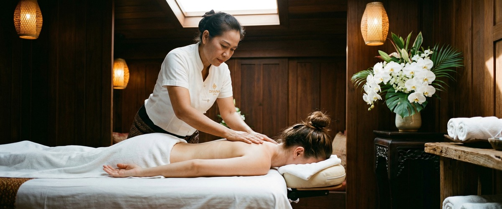
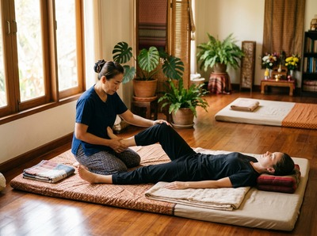

If you spend most of your working day at a screen, your body is paying a price you might not have noticed yet.

Desk pain and stress are the two most common complaints among office workers. Thai massage combines assisted stretching, acupressure, and rhythmic compression. It tackles both problems at the root, rather than masking the symptoms. This article explains what desk tension does to your body and how regular Thai massage can be one of the most effective tools for managing it.
Office workers sit for six to ten hours a day on average, often without enough movement breaks. Prolonged sitting compresses the spine, reduces circulation, and weakens core muscles. All of this leads to back, shoulder, and hip pain.

When your shoulders round forward and your head pushes toward the screen, your neck and upper back work hard just to keep you upright. Over time, these habits create muscle imbalances that become harder to reverse without targeted treatment.
Typing and mouse use also strain the wrists, forearms, and upper trapezius. The result is a pattern of pain and stiffness that desk adjustments alone rarely fix.
Traditional Thai massage is a fully clothed treatment that uses acupressure along sen energy pathways and guided passive stretching. This makes it well suited to the postural strain that builds up through desk work. Pressure is applied to release knots in the neck, shoulders, upper back, and hips — the areas most affected by sitting for long periods.
Research in the Journal of Bodywork and Movement Therapies found that office workers who had regular massage showed clear improvements in neck and shoulder posture. They also reported less pain from prolonged computer use.
A separate study on Thai massage for neck and shoulder pain found it reduced pain and improved range of motion compared to pre-treatment levels. The assisted stretching element works like a guided yoga session, opening the chest, extending the spine, and relieving pressure in the lower back. You can book a Thai massage session at Serendipity to experience this directly.
Desk work is not just physically demanding. Sustained focus, deadlines, and screen fatigue keep the nervous system in a low-level stress state throughout the day. This shows up physically as tight muscles, shallow breathing, poor sleep, and a raised heart rate.
A controlled trial on traditional Thai massage found that both blood pressure and heart rate dropped significantly after treatment. A separate study found Thai massage reduced salivary alpha-amylase — a key stress marker — more than rest alone.
Massage also prompts the release of serotonin and dopamine, the chemicals that regulate mood and calm the body. The result is a real reduction in physical tension, not just a brief feeling of relaxation.
Swedish massage uses flowing strokes and kneading to boost circulation and ease surface muscle tension. It is a good choice for office workers who want a gentler start to regular bodywork.
Thai oil massage blends flowing strokes with deeper pressure, making it well suited to those carrying deep tension in the back and shoulders alongside stress-related fatigue.
At Serendipity Massage Therapy & Wellness, every therapist uses techniques developed by head therapist Jariya Malone, applied to a consistent standard across every session. For anyone working around Hope Street or Blythswood Square, the studio is a short walk from the working day.
For desk workers managing general tension and stress, once a month is a practical starting point. During busy periods, or when dealing with something specific like persistent neck pain, fortnightly sessions are more effective for building lasting change.
The goal is not to wait until the pain disrupts your day. Booking before it reaches that point means each session builds on the last, rather than starting from scratch. You can book your appointment online and choose a time that fits around your working schedule.
Yes. Thai massage is suitable for most people, including first-timers. At your first session at Serendipity Massage Therapy & Wellness, your therapist will discuss your areas of tension and any concerns before starting. The pressure and depth of stretching can be adjusted to suit your comfort level throughout the treatment.
Traditional Thai massage is performed fully clothed, so wear loose, comfortable clothing you can move in. There is no need to undress. If you are booking a Thai oil massage instead, the therapist will guide you on preparation when you arrive.
Swedish massage uses flowing strokes and kneading to ease surface muscle tension and improve circulation. It works well for general relaxation and mild stiffness. Thai massage goes deeper. It combines acupressure along the body's sen energy pathways with passive assisted stretching. This makes it particularly effective for the postural imbalances and compressive tension that build up through desk work.
Tension headaches are often caused by tightness in the upper trapezius, neck, and suboccipital muscles. These are among the areas most directly addressed by Thai massage. Releasing this tension through acupressure and stretching can reduce the frequency and intensity of headaches for many desk workers. A Thai head massage, which focuses on the scalp, neck, and upper shoulders, is also worth considering.
Many people notice less tension and better range of motion straight after a session. For chronic desk pain, the biggest improvements tend to build over a series of sessions rather than from a single visit. A regular schedule is more effective than occasional treatments in isolation.
Serendipity Massage Therapy & Wellness is located at Floor 1, Suite 50, Central Chambers, 93 Hope Street, Glasgow G2 6LD, in the heart of Glasgow's financial district. You can book online at any time or call 0141 673 6630 to speak with the team.